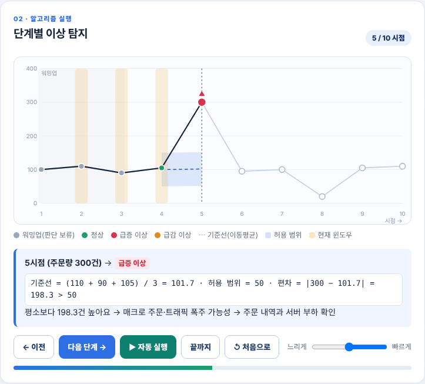
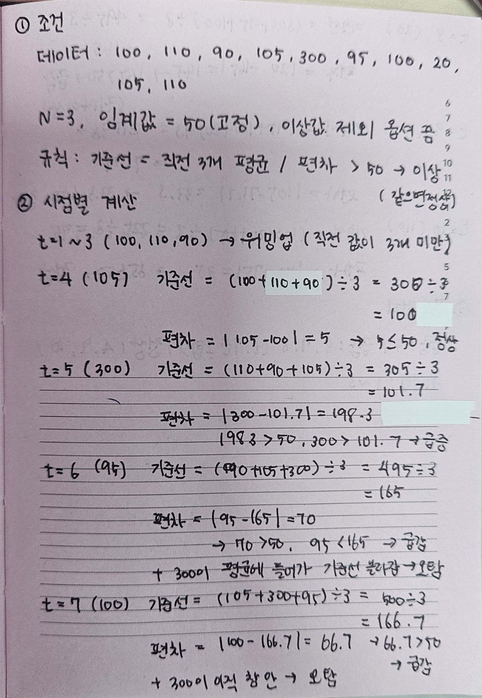
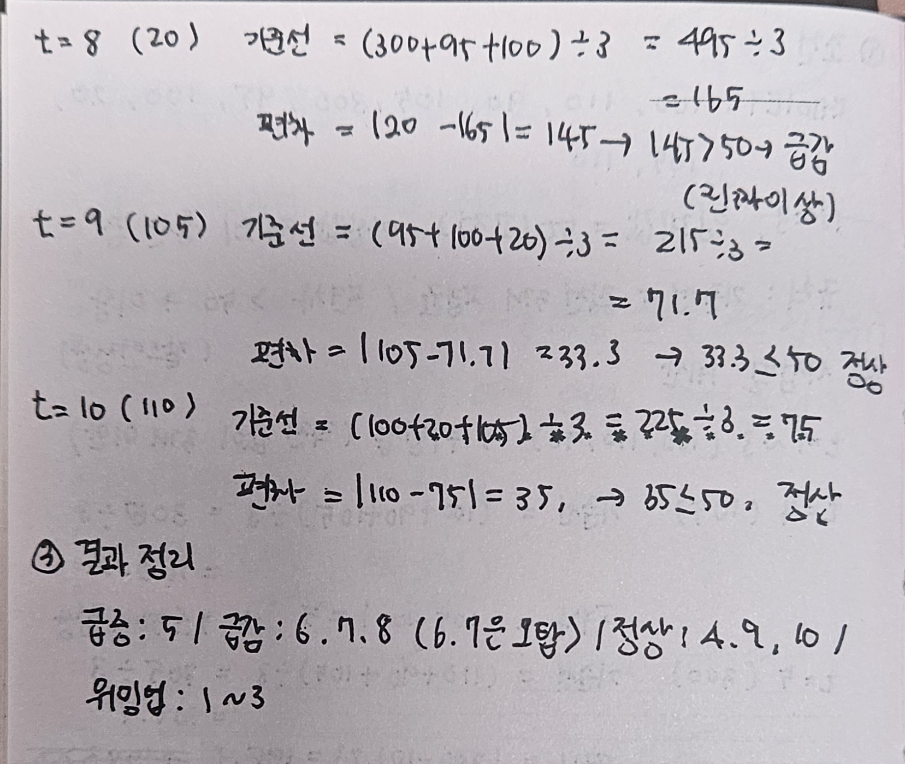
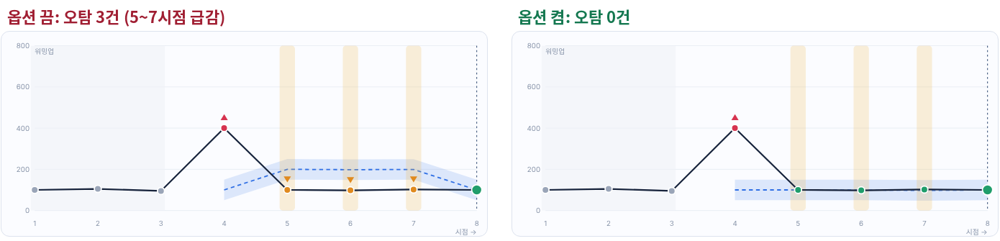

이동평균 기반 이상 탐지(Moving Average Anomaly Detection)는 시간 순서로 들어오는 수치에서 "평소와 다른 값"을 자동으로 찾는 방법이다. 평소 수준을 고정된 숫자로 정하지 않고, 직전 N개 시점의 평균(이동평균)을 기준선으로 계속 다시 계산한다. 새 값이 기준선에서 허용 범위보다 많이 벗어나면 이상으로 판정한다.
해결하려는 문제: 명절 시즌 법인 주문 시스템에서 시간대별 주문이 갑자기 폭증하면(매크로 주문, 트래픽 폭주) 또는 뚝 끊기면(결제·서버 장애) 담당자가 즉시 알아야 한다. "500건 이상이면 경보" 같은 고정 기준은 주문 규모가 시즌마다 달라 금방 쓸모가 없어진다. Datadog 문서도 꾸준히 성장하는 지표에서는 고정 임계값이 곧 낡는다고 설명한다[3]. 이동평균은 최근 데이터로 기준을 자동 갱신하므로 이 문제를 단순하게 해결한다.
선정 이유: 명절 법인영업팀에서 주문을 처리하고 데이터를 맞춰 발송하는 업무를 했고, 병원 결과팀에서는 검진 데이터를 검증한 경험이 있다. 그때 사람이 눈으로 판단하던 "평소와 다르다"를 수치 기준으로 자동화하는 원리를 이해하고 싶었다. 또 시계열 모니터링은 희망 진로인 데이터 엔지니어링·데이터 사이언스의 기본 주제다.
| 서비스·사례 | 내용 | 이 알고리즘과의 연결 |
|---|---|---|
| Amazon CloudWatch 이상 탐지[1] | 지표에 통계·머신러닝 알고리즘을 적용해 정상 동작을 나타내는 예상값 범위(밴드)를 만든다. 임계값이 클수록 밴드가 두꺼워진다. 배포 같은 비정상 구간을 모델 학습에서 제외할 수 있다. | 기준선 + 허용 범위, "이상값을 기준선에서 제외" 옵션 |
| AWS 블로그: 온라인 주문 동적 알람[2] | 소매 주문이 예상 기준선 아래로 떨어지면 세일 전환 같은 조치를 자동으로 실행하는 이상 탐지 알람을 구성하는 튜토리얼이다. | 주문량 급감 탐지 시나리오와 동일 |
| Datadog Anomaly Monitor[3] | 가장 단순한 basic 알고리즘은 지연(lagging) 롤링 분위수로 예상 범위를 계산한다. 데이터가 적게 필요하고 변화에 빨리 적응하지만 계절성과 장기 추세는 반영하지 못한다. | 롤링(이동) 윈도우 방식, 같은 장단점 |
1e-9는 소수 계산 오차 때문에 경계값(편차 = 허용 범위) 판정이 뒤집히지 않게 두는 작은 여유다.
예시 (N=3, 허용 ±50): 데이터 100, 110, 90, 105, 300, 95 … → 5시점 기준선 = (110+90+105)/3 = 101.7, 편차 = |300−101.7| = 198.3 > 50이므로 급증. 6시점은 300이 평균에 들어가 기준선이 165로 뛰고, 정상값 95가 편차 70으로 급감 오탐된다. 이 "기준선 오염"이 이동평균의 대표적 한계이며, CloudWatch가 비정상 구간을 학습에서 제외하는 이유와 같다[1].

| 기능 | 설명 |
|---|---|
| 입력·조건 변경 | 측정값(5~40개), 윈도우 N(2~10), 임계값 방식(고정/비율), 임계값, 이상값 제외 옵션, 시나리오(주문량/설비 온도) |
| 예제 5종 | 기본, 기준선 오염 비교, 결제 장애(급감), 설비 온도 센서, 한계: 서서히 증가(드리프트) |
| 단계별 실행 | 이전/다음, 자동 실행, 속도 슬라이더, 끝까지, 처음으로. 단계마다 "기준선 = … · 편차 = … > 허용"을 한 줄로 설명 |
| 결과와 해석 | 급증·급감·정상·워밍업 건수, 이상 시점별 원인 가능성(예: 결제 장애 → 결제 시스템 확인), 시점별 계산 표 |
| 예외 처리 | 빈칸·문자·음수·소수, 개수 범위 초과, N ≥ 데이터 개수일 때 오류 메시지를 띄우고 실행 버튼을 비활성화 |
| # | 입력 | 확인 내용 | 결과 |
|---|---|---|---|
| 1 | 100,110,90,105,300,95,100,20,105,110 / N=3 / ±50 | 급증·급감 탐지, 손계산 비교 | 일치 |
| 2 | 100,105,95,400,100,98,102,100 / N=3 / ±50 | 이상값 제외 옵션 끔 vs 켬 | 일치 |
| 3 | 120,115,125,118,122,15,10,119,121,117 / N=4 / ±40% | 비율 방식, 다른 N | 일치 |
| 4 | 100,100,100,150,151 / N=3 / ±50 | 경계값(편차 = 50 → 정상) | 일치 |
| 시점 | 값 | 손계산 기준선 | 편차 | 예상 판정 | 시뮬레이터 |
|---|---|---|---|---|---|
| 1~3 | 100,110,90 | – | – | 워밍업 | 워밍업 ✔ |
| 4 | 105 | (100+110+90)/3 = 100 | 5 | 정상 | 정상 ✔ |
| 5 | 300 | (110+90+105)/3 = 101.7 | 198.3 | 급증 | 급증 ✔ |
| 6 | 95 | (90+105+300)/3 = 165 | 70 | 급감(오탐) | 급감 ✔ |
| 7 | 100 | (105+300+95)/3 = 166.7 | 66.7 | 급감(오탐) | 급감 ✔ |
| 8 | 20 | (300+95+100)/3 = 165 | 145 | 급감 | 급감 ✔ |
| 9 | 105 | (95+100+20)/3 = 71.7 | 33.3 | 정상 | 정상 ✔ |
| 10 | 110 | (100+20+105)/3 = 75 | 35 | 정상 | 정상 ✔ |



Claude로 조사 자료 탐색, 화면 설계, 코드 작성을 했고, 판정 규칙(직전 N개 평균, 경계값은 정상, 워밍업)은 구현 전에 직접 확정했다. AI가 작성한 "결제 장애" 예제 안내문은 "8시점만 급증"이라고 설명했지만, 손계산 결과 8~10시점이 모두 급증이어서 수정했다. AI 결과물을 그대로 믿지 않고 손계산으로 확인해야 하는 이유를 보여 준 사례다.